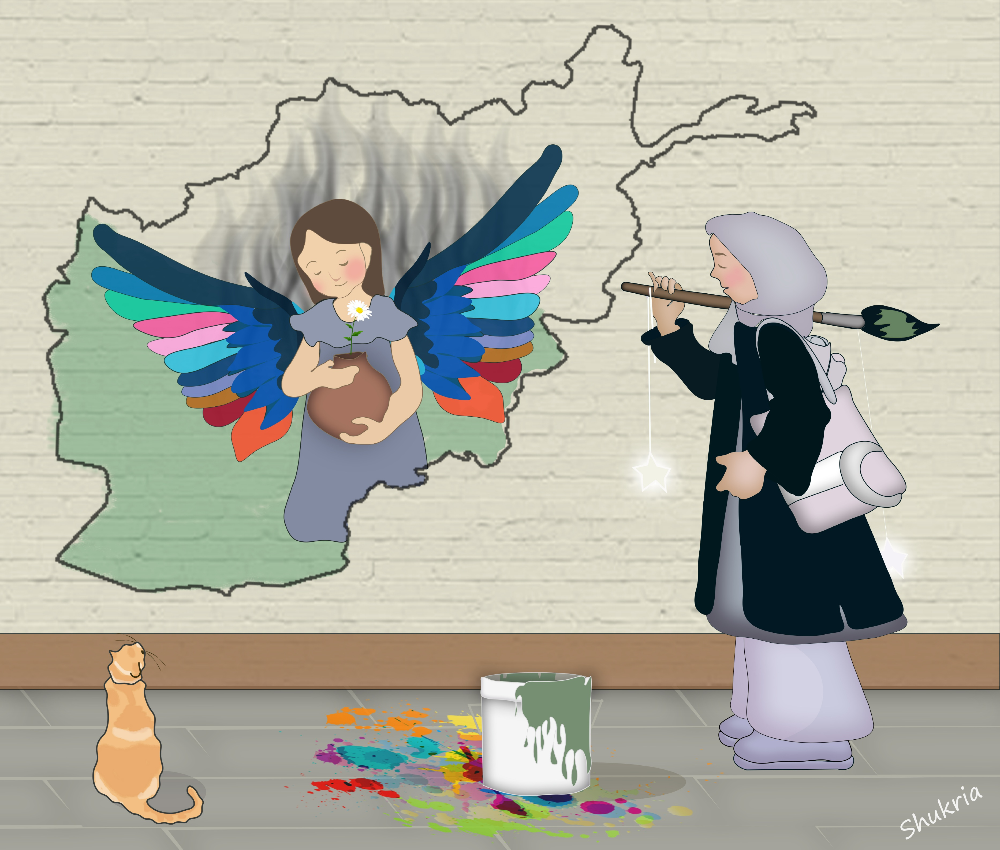
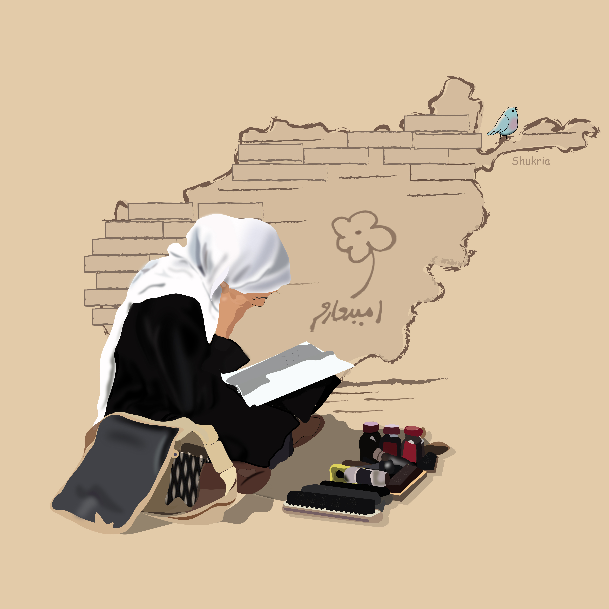
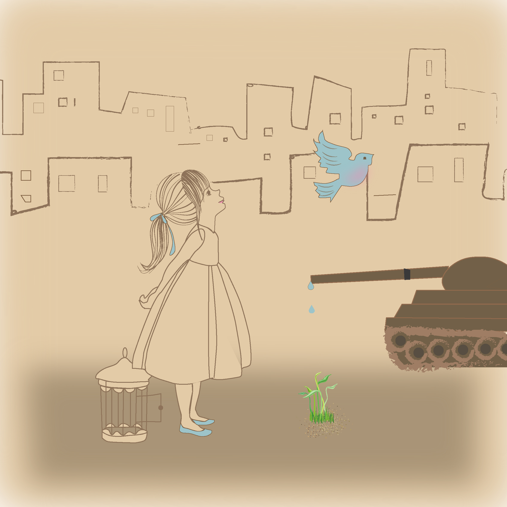
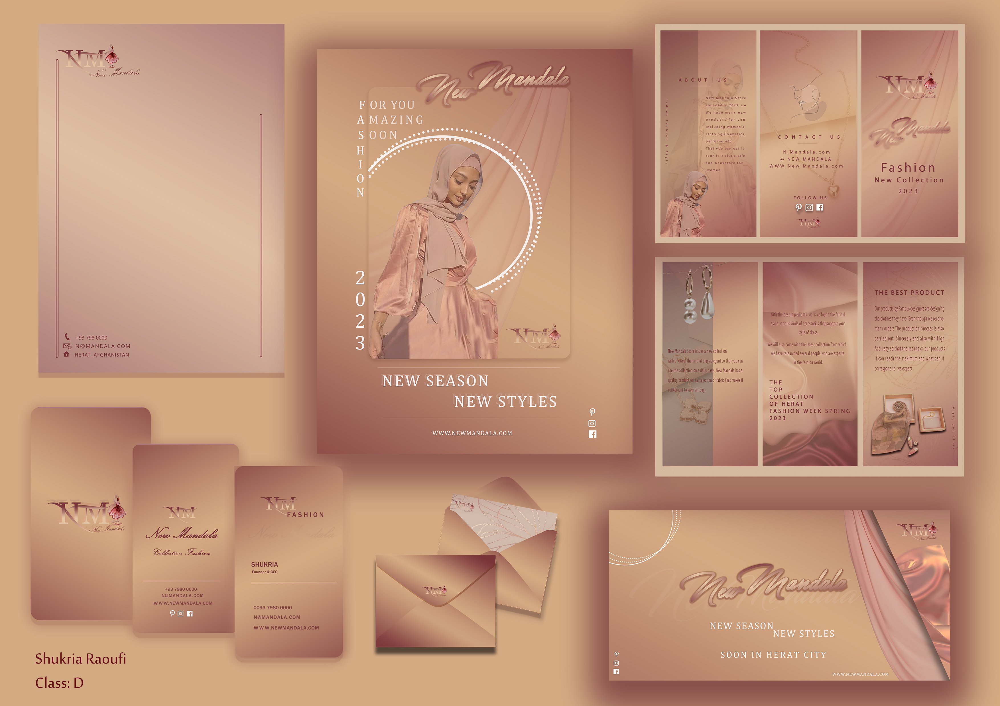
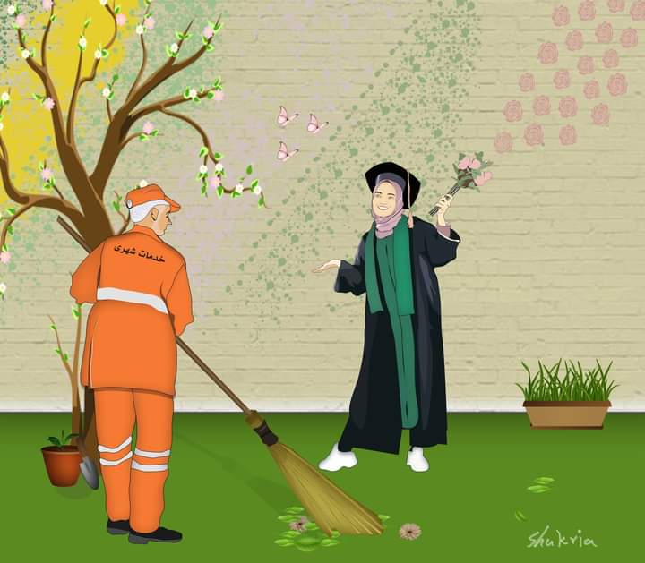
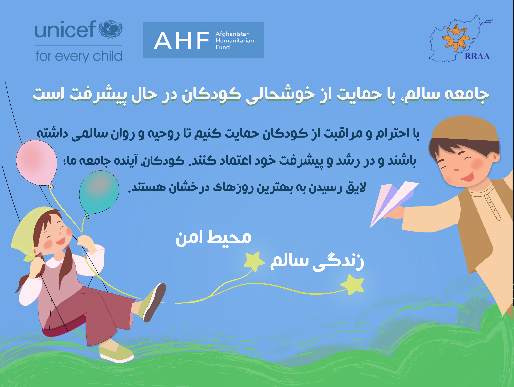
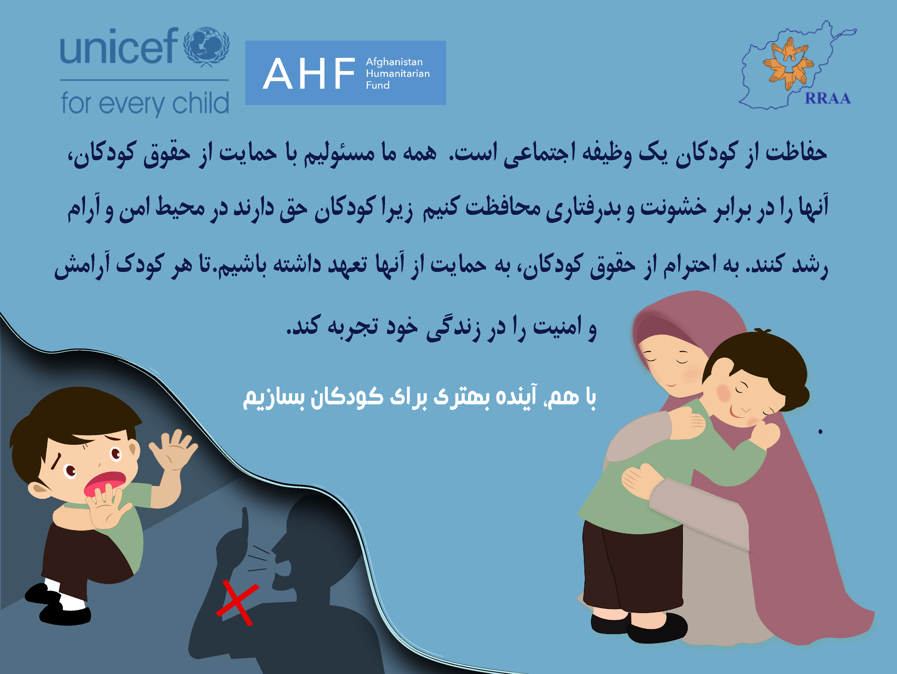
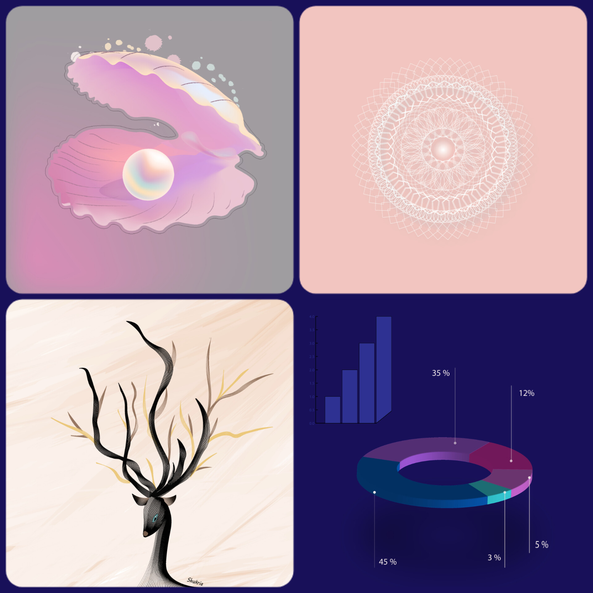
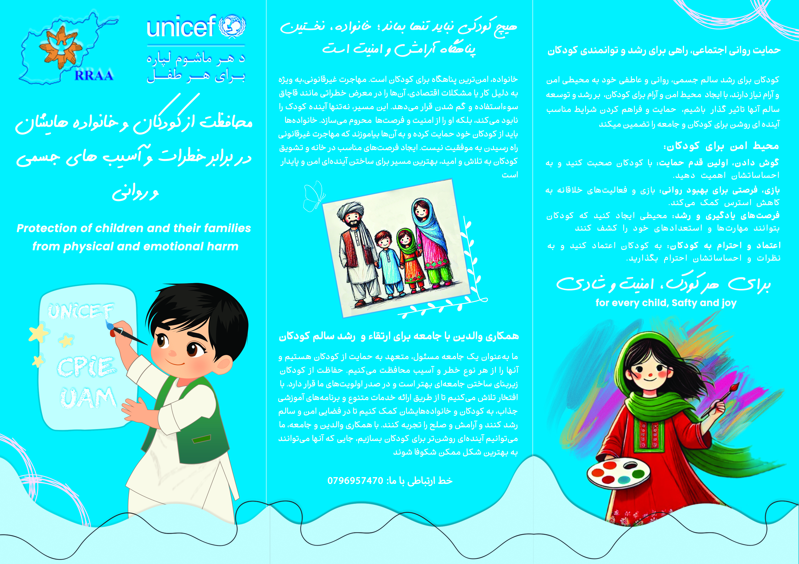
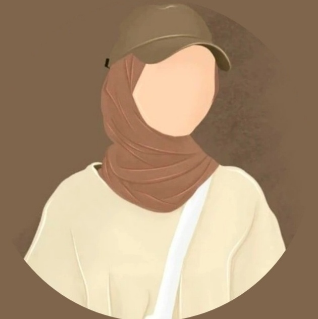

Portfolio










Welcome to my Curriculum Vitae

I am a passionate and detail-oriented graphic and web designer with 3 years of hands-on experience. I specialize in creating modern, user-friendly designs for both digital and print media. My goal is to blend creativity with practical solutions to deliver impactful visual content.
Adobe Photoshop, Adobe Illustrator, 3D Printing & Modeling, HTML / CSS / Web Design, Microsoft Office
Studied Graphic and Web Design at CTI Center. Developed skills in design tools and web technologies.









Email: shukria.raoufi@gmail.com
Phone: +93 798 280 886
Location: Herat, Afghanistan